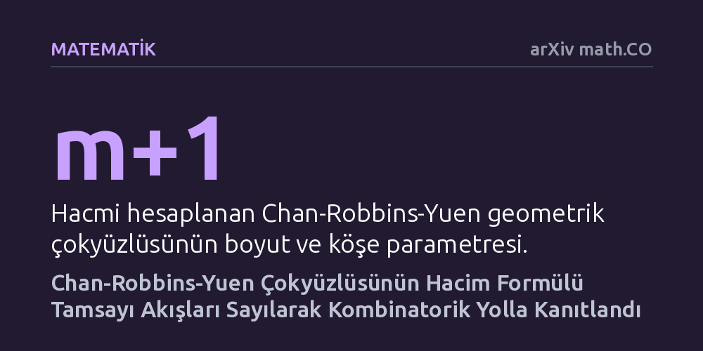

MATEMATIK · arXiv math.CO · 2026-10-16
Chan-Robbins-Yuen çokyüzlüsünün hacmini Catalan sayılarının çarpımıyla veren ünlü formüle, çeyrek asırdır aranan doğrudan kombinatorik kanıt getirildi. Çizgelerdeki negatif olmayan tamsayı akışlarını Narayana sayılarıyla ilişkilendirip çift sayım yapan araştırmacı, formülü cebirsel hilelere gerek kalmadan doğrudan sayarak doğruladı.
Daha önce yalnızca ağır cebirsel özdeşliklerle doğrulanabilen karmaşık bir geometrik hacim formülünün, ardındaki çizgeler ve akışlar doğrudan sayılarak somut biçimde anlaşılabileceğini gösterir.

Çok boyutlu uzaylarda tanımlanan geometrik şekiller yani çokyüzlüler, ilk bakışta soyut görünse de modern matematiğin ve eniyileme kuramının temel yapı taşları arasında yer alır. 1990'lı yılların sonunda Clara Chan, David Robbins ve David Yuen tarafından ortaya atılan ve kendi isimleriyle anılan 'Chan-Robbins-Yuen' çokyüzlüsü, matematik dünyasında büyük bir merak uyandırmıştı. Bunun nedeni, bu karmaşık geometrik cismin normalleştirilmiş hacminin, matematikte çok iyi bilinen ardışık Catalan sayılarının çarpımına eşit çıkmasıydı.
Ünlü matematikçi Doron Zeilberger 1999 yılında bu hacim formülünün doğruluğunu ispatlamayı başardı. Ancak Zeilberger'in çözümü, Morris sabit terim özdeşliği adı verilen son derece teknik ve ağır bir cebirsel araca dayanıyordu. Formülün doğruluğu kanıtlanmış olsa da hacmin neden tam olarak Catalan sayılarının çarpımına eşit olduğuna dair somut ve sezgisel bir açıklama eksik kalmıştı. Kombinatorik yani sayma kuramı uzmanları için asıl tatmin edici zafer, formülü cebirsel hesaplarla doğrulamak değil; o hacmi oluşturan nesneleri doğrudan sayarak ispatlayabilmektir. Bu nedenle problemin doğrudan saymaya dayalı bir kanıtını bulmak çeyrek asırdır çözülememiş bir bilmece olarak duruyordu.
Araştırmacı Nurtas Shyntas, bu köklü geometri problemini çözmek için çizge kuramı ve akış çokyüzlüleri yaklaşımını benimsedi. Bir çizgeyi, köşeleri duraklar ve kenarları tek yönlü yollar olan bir ulaşım ağı gibi düşünebilirsiniz. Bu ağ üzerinde belirli kurallara göre ilerleyen tamsayılı akışlar tanımlandığında, bu akışların oluşturduğu tüm olası durumların geometrik temsili doğrudan Chan-Robbins-Yuen çokyüzlüsüne karşılık gelir.
Yazar yöntemi kurgularken bu ağ yapısına zekice bir ekleme yaptı: Çizgedeki her bir köşeden, ortak bir bitiş noktasına yeni birer kenar bağladı. Ardından, bu ek kenarların kaç tanesinden pozitif akış geçtiğini sınıflandırarak negatif olmayan tamsayı akışlarını saymaya başladı. Bu akılcı kurgu, karmaşık ve soyut hacim hesabını adım adım izlenebilen somut bir ağ akışı sayma problemine dönüştürdü.
Makalenin merkezindeki matematiksel bulgu, 'çift sayım' ilkesine dayanıyor. Sayma kuramında aynı nesne kümesi iki farklı yöntemle sayılıp birbirine eşitlendiğinde çok güçlü bağıntılar elde edilir. Yazar, kurduğu akış modelinde çift sayım uygulayarak Morales ve Shi tarafından daha önce geliştirilen bir yineleme bağıntısının özel bir durumunu ispatlamayı başardı.
Bu yöntem sayesinde akış sayıları, Catalan sayılarının bir alt kırılımı niteliğindeki Narayana sayıları cinsinden ifade edildi. Sürecin son ve belirleyici adımında çizgenin ilk köşesi sistemden çıkarıldığında, ortaya çıkan cebirsel ifadeler ardışık olarak sadeleşti ve doğrudan Chan-Robbins-Yuen formülündeki Catalan sayıları çarpımına ulaşıldı. Yazar ayrıca bu indirgeme adımı için kümeler arasında birebir eşleme kurarak matematikçi Alexander Postnikov'un geçmişte ortaya attığı bir indirgeme varsayımını da doğrulamış oldu.
Elde edilen bu sonuç, matematikte bir ifadenin sadece doğru olduğunu bilmek ile o doğruluğun mantığını kavramak arasındaki büyük farkı simgeliyor. Yirmi beş yıldır yalnızca karmaşık integraller ve cebirsel eşitlikler yardımıyla doğrulanabilen geometrik bir hacim, nihayet ağlar üzerindeki yolların adım adım sayılmasıyla anlaşılır hale geldi.
Bu kanıt sadece Chan-Robbins-Yuen çokyüzlüsünü aydınlatmakla kalmıyor; benzer yapıdaki diğer akış çokyüzlülerinin hacim hesapları için de güçlü bir model sunuyor. Cebirsel yöntemlerin tıkandığı yüksek boyutlu kombinatorik geometri problemlerinde, iyi kurgulanmış ağ akışlarının ve birebir eşlemelerin ne denli etkili çözümler üretebileceği bir kez daha görülmüş oldu.